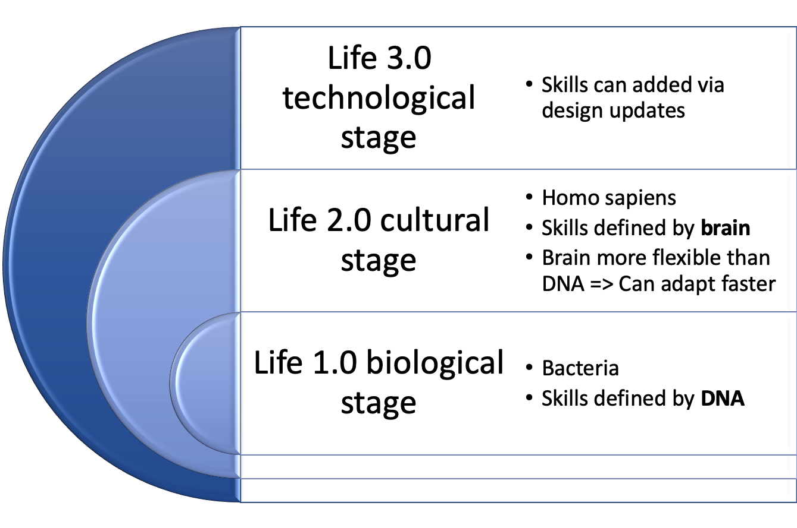
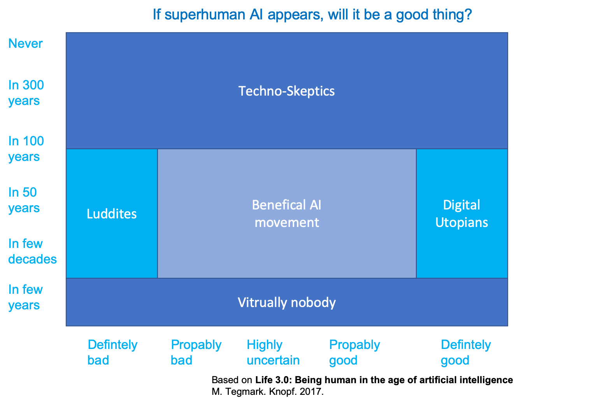

Chapter 3 Outlook
What will the future bring for society?
The saddest aspect of life right now is that science gathers knowledge faster than society gathers wisdom.
Isaac Asimov
3.1 Development of life
Tegmark in “Life 3.0: Being human in the age of artificial intelligence” (Tegmark 2017) p. 23. classifies life into three stages and shows the two existing stages of life and the third stage which might be ahead.

The three stages of life have overlapping skills, but only life 3.0 has all skills and is able to design its hardware and therefore might be able to have unlimited skills

3.1.1 When will superhuman AI come, and will it be good?
Several opinions about when and if superhuman AI will appear and if it will be a good thing or not exists. Those opinions can be grouped as shown in the following graph.

Luddite => A person opposed to new technology or ways of working
Please cast your vote at https://pingo.coactum.de/15767814
3.1.2 AI aftermath scenario
To be prepared we might want to ask yourselves:
- Do you want there to be superintelligence?
- Do you want humans to still exist, be replaced, cyborgized and/or uploaded/simulated?
- Do you want humans or machines in control?
- Do you want AIs to be conscious or not?
- Do you want to maximize positive experiences, minimize suffering or leave this to sort itself out?
- Do you want life spreading into the cosmos?
- Do you want a civilization striving toward a greater purpose that you sympathize with, or are you OK with future life forms that appear content?
Depending on your answers this might lead to one of the following scenario
A verbal description of the scenarios is given below, type the name of the scenario into the left field, if you want more scenarios to be shown increase the “Show entries” entry
3.2 Data religion: Dataism
A data based religion called Dataism is a concept described by Harari in Homo Deus: A brief history of tomorrow (Harari 2016) and says:
- Universe consists of data flow
- Value of entity determined by contribution to data processing
- Collapses barrier between animals and machines15
- electronic algorithms eventually outperform biochemical algorithms
In data we trust
Humans supposed to distill

- data => information
- information => knowledge
- knowledge => wisdom
- Dataists
- believe humans can not cope with immense flow of data
- put there trust in Big Data and computer algorithms
Dataism: only wild fantasy?
Dataism entrenched in

- computer science
- biology
- giraffes, tomatoes and human beings are just different methods for processing data
- that is current scientific dogma
Economists interpret economy as data processing system
- Gathering data about desires and abilities
- Turning data into decisions
- Capitalism => distributed processing
- Communism => centralized processing
- Capitalists against high taxes
- capital accumulates at state
- more decisions by single processor, namely government
3.3 Career: Oxford seeks AI ethics professor
- Associate Professorship or Professorship in Philosophy
- Apply for University of Oxford - Faculty of Philosophy (Ethics in AI)
References
Harari, Yuval Noah. 2016. Homo Deus: A Brief History of Tomorrow. Random House.
Tegmark, Max. 2017. Life 3.0: Being Human in the Age of Artificial Intelligence. Knopf.
Pingo question: Ihre Position zur AGI? https://pingo.coactum.de/questions↩︎
“Dataism was born from the explosive confluence of two scientific tidal waves. In the 150 years since Charles Darwin published On the Origin of Species, the life sciences have come to see organisms as biochemical algorithms. Simultaneously, in the eight decades since Alan Turing formulated the idea of a Turing Machine, computer scientists have learned to engineer increasingly sophisticated electronic algorithms. Dataism puts the two together, pointing out that exactly the same mathematical laws apply to both biochemical and electronic algorithms. Dataism thereby collapses the barrier between animals and machines, and expects electronic algorithms to eventually decipher and outperform biochemical algorithms.” Harari, Yuval Noah. Homo Deus: A Brief History of Tomorrow . HarperCollins. Kindle Edition. ↩︎